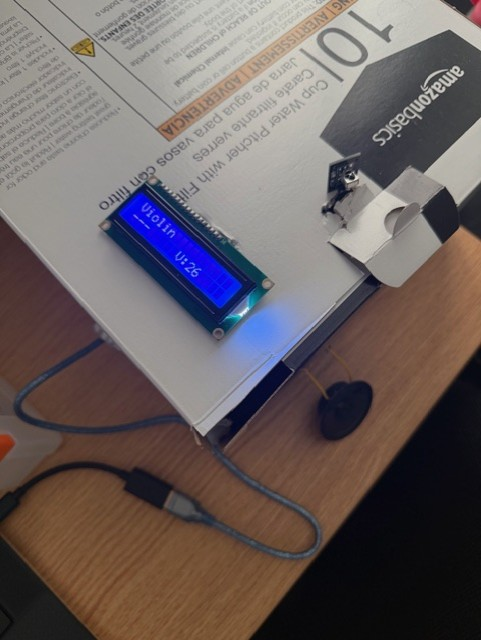
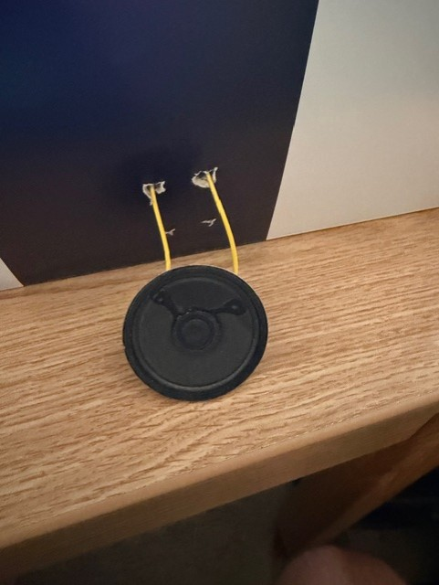
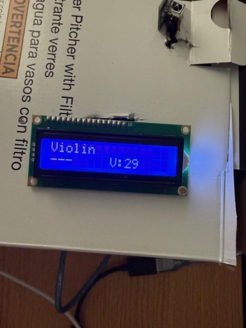
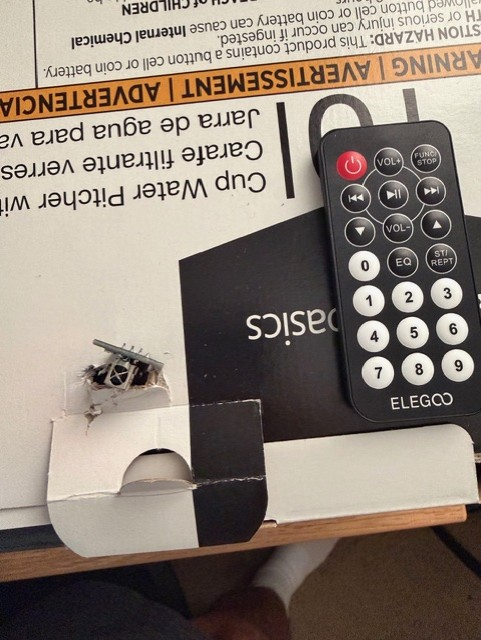
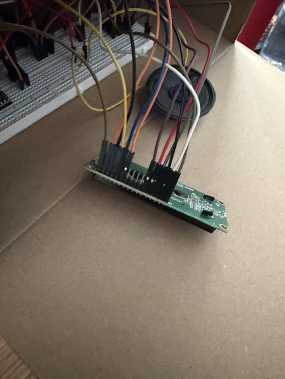
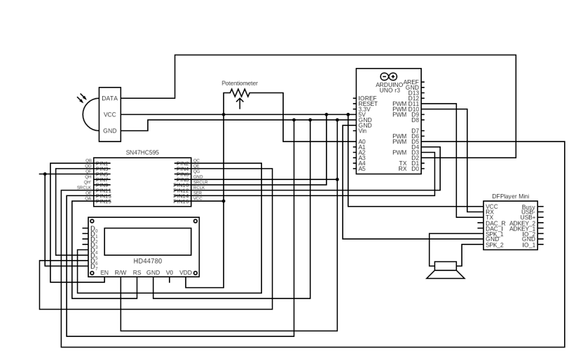

Designed and built an interactive musical instrument controller using Arduino, an IR remote, LCD display, MP3 player module, and speakers.
Integrated electronic components to create a system that allows users to select and play four different instruments using an IR remote interface.
Developed C++ code to process remote inputs, control audio files, and customize instrument functions. The millis function was implemented to eliminate playback latency and improve real-time responsiveness.
Performed circuit analysis, component testing, and debugging to verify proper electrical connections and ensure reliable system operation.